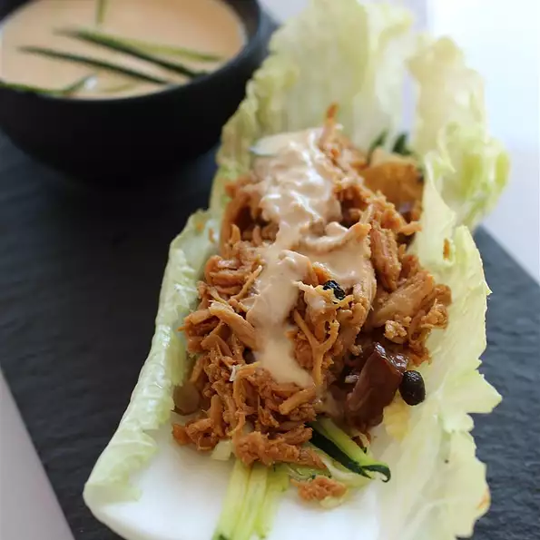

No-Cook Chicken Lettuce Wraps

Description
These Asian-inspired chicken lettuce wraps are great for summer nights, refreshing, and require no cooking!
Ingredients
- 1 deli-roasted chicken, meat removed and shredded
- ½ cup shredded carrots
- ½ cup chopped water chestnuts
- ⅓ cup Asian-style salad dressing
- ¼ cup plain Greek yogurt
- 1 pinch red pepper flakes, or to taste (Optional)
- 1 head Boston lettuce leaves
Steps
- Mix chicken, carrots, and water chestnuts in a large bowl.
- Stir salad dressing and yogurt together in a separate bowl until smooth; pour over the chicken mixture and toss to coat.
- Spoon chicken mixture into lettuce leaves. Season with red pepper flakes.
Nutrition Facts
Per Serving: 362 calories; protein 26.7g; carbohydrates 7.5g; fat 25.1g; cholesterol 103.1mg; sodium 348.9mg
via GIPHY